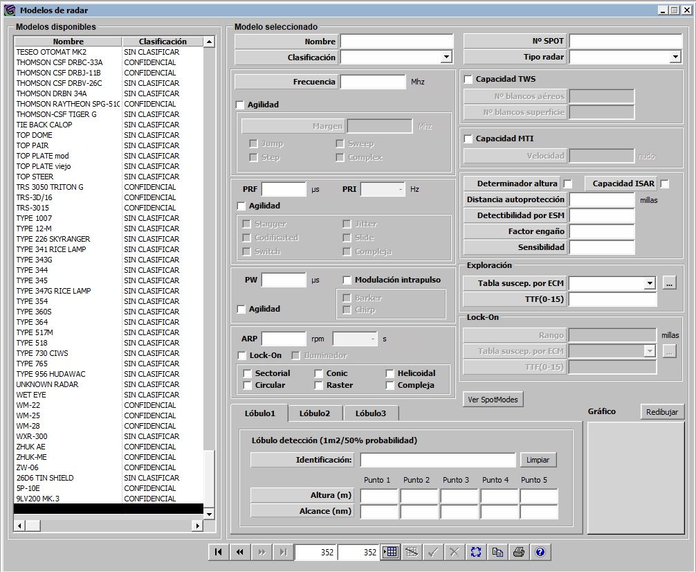
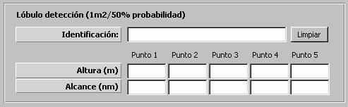
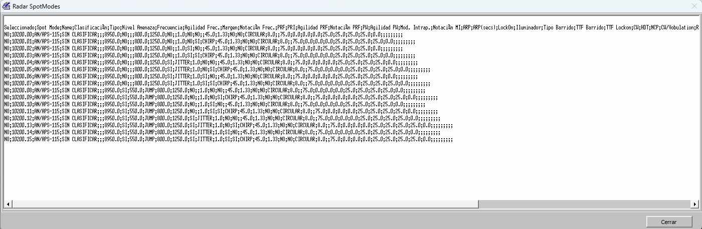

Radar


Descripción de los parámetros:
Nº de SPOT: Este parámetro identifica de forma única a cada radar. Es tenido en cuenta por el modelo de ESM de modo que la detección por ESM de un radar puede suponer la obtención del número de SPOT del radar detectado. A través del modelo de ESM, este parámetro del radar también afecta al lanzamiento de misiles tipo ARM, y al lanzamiento automático de Chaff con filtro ASMD.
Unidades: ---
Rango: Hasta cinco caracteres alfanuméricos.
Tipo de Radar: Puede tomar los siguientes valores:
- Radar de Navegación
- Radar de Exploración Superficie
- Radar de Exploración Aérea
- Dirección de Tiro
- Radar de Aéreo Interceptación
- Radar de Aeronave
- Seeker
- Radar Multifunción
Este parámetro determina si el radar puede ser empleado como seeker de misil o como dirección de tiro. El resto de tipos de radar son informativos.
Frecuencia: Este parámetro influye en el cálculo del RCS de una plataforma para este radar. También es tenido en cuenta por el modelo de ESM para determinar si detecta emisión de este radar.
Unidades: MHz
Rango: 0 – 99999
Agilidad: Determina si el radar tiene capacidad de trabajar en un margen de frecuencias. Si tiene esta capacidad, cuando el radar se active se seleccionará una frecuencia de funcionamiento como un valor aleatorio en un rango de valores [frecuencia-margen, frecuencia+margen]. Es tenido en cuenta por el modelo de ESM para evaluar si puede obtener frecuencia de una emisión radar detectada.
Margen: Este parámetro determina el margen de frecuencia en el que puede trabajar el radar. Este parámetro sólo puede ser introducido si se ha seleccionado Agilidad.
Unidades: MHz
Rango: 0 – 999,9
Notación en Frecuencia (Agilidad): Se detalla el tipo de agilidad, con cuatro posibles valores, no excluyentes entre sí: Jump, Step, Sweep y Complex. El valor por defecto será Jump y es obligatorio seleccionar al menos una de las opciones.
PRF: Pulse Repetition Frequency. Este parámetro es tenido en cuenta por el modelo de radar en el cálculo del alcance máximo del radar. Al introducir el valor en microsegundos el sistema automáticamente rellena el intervalo de repetición (PRI), en Hercios.
Unidades: microsegundos
Rango: 0 – 99999
Notación en PRF (Agilidad): Determina si el radar trabaja con PRF Agil o no. Es tenido en cuenta por el modelo de ESM para evaluar si puede obtener PRF de una emisión radar detectada. El tipo de agilidad puede tomar seis posibles valores, no excluyentes entre sí: Stagger, Codificado, Switch, Jitter, Slide y Compleja. El valor por defecto será Jitter y es obligatorio seleccionar al menos una de las opciones.
PW: Pulse Width. Este parámetro es tenido en cuenta por el modelo de radar para determinar la distancia de discriminación de contactos por línea de costa.
Unidades: ms
Rango: 0 – 99999
Modulación Intrapulso: Determina si el radar trabaja con Modulación Intrapulso o no. Es tenido en cuenta por el modelo de ESM para evaluar si puede obtener PW de una emisión radar detectada. El tipo de modulación puede tomar dos posibles valores, excluyentes entre sí: Chirp y Barker. El valor por defecto será Chirp y es obligatorio seleccionar al menos una de las dos opciones.
Notación en PW (Agilidad): Determina si el radar trabaja con Ancho de Pulso Agil o no.
ARP: Antenna Rotation Period. Este parámetro es tenido en cuenta por el modelo de radar para calcular el tiempo que tarda en dar un barrido completo. Al introducir el valor en rpm el sistema automáticamente rellena el intervalo de rotación, en segundos.
Unidades: rpm
Rango: 0 – 9999
Iluminador: Determina si el radar puede hacer iluminación sobre contactos.
Lock-On: Determina si el radar puede hacer Lock-On sobre contactos.
Tipos de Barrido de Antena: Admite seis opciones posibles, todas ellas excluyentes: Circular, Sectorial, Conic, Raster, Compleja y Helicoidal. El valor por defecto es Circular, y no es obligatorio seleccionar una de las opciones si el radar tiene capacidad Lock-on o Iluminador.
Capacidad TWS: Track-While-Scan. Determina si el radar tiene capacidad de hacer TWS.
Nº blancos aéreos: Número máximo de contactos aéreos sobre los que el radar puede hacer TWS simultáneamente. Este parámetro sólo puede ser introducido si se ha seleccionado Capacidad TWS.
Unidades: ---
Rango: 0 – 999
Nº blancos superficie: Número máximo de contactos superficie sobre los que el radar puede hacer TWS simultáneamente. Este parámetro sólo puede ser introducido si se ha seleccionado Capacidad TWS.
Unidades: ---
Rango: 0 – 999
Capacidad MTI: Moving Target Indicator. Determina si el radar tiene capacidad de activar MTI.
Velocidad: Velocidad máxima de contactos considerada por el radar cuando tiene activado el MTI, de forma que los contactos con velocidad menor o igual que ésta son filtrados. Este parámetro sólo puede ser introducido si se ha seleccionado Capacidad MTI.
Unidades: Nudos
Rango: 0 – 999
Determinador de Altura: Determina si el radar tiene capacidad de obtener la altura de los contactos detectados cuando está haciendo exploración.
Capacidad ISAR: Inverse Synthetic Aperture Radar. Determina si el radar tiene capacidad de ISAR, en cuyo caso el modelo de radar determina tipo y clase de las unidades de superficie detectadas.
Distancia Autoprotección: Distancia por debajo de la cual los contactos detectados por el radar no se ven afectados aunque el radar esté siendo interferido por ECM mediante técnicas de engaño o perturbación.
Unidades: Millas
Rango: 0 – 9,99
Detectabilidad por ESM: Este parámetro es tenido en cuenta por el modelo de ESM para calcular el alcance de detección de emisiones radar. Factor que modela la relación entre el alcance del radar y el alcance del ESM para este radar.
Unidades: ---
Rango: 0 – 1,99
Ejemplo:
Si Detectabilidad por ESM = 0 ⇒ Radar no detectable por ESM.
Si Detectabilidad por ESM = 1 ⇒ Alcance ESM = Alcance Radar.
Si Detectabilidad por ESM @ 2 ⇒ Alcance ESM @ 2 * Alcance Radar.
Factor Engaño: Este parámetro es tenido en cuenta por el modelo de Radar para calcular el alcance. Factor que modela la reducción del alcance del radar cuando está siendo perturbado.
Unidades: ---
Rango: 0 – 0,99
Ejemplo:
Si Factor Engaño = 0 ⇒ La interferencia no tiene efecto.
Si Factor Engaño @ 1 ⇒ El radar no detecta.
Sensibilidad: Este parámetro es tenido en cuenta por el modelo de Radar para calcular el número de falsos ecos aleatorios que se producen. Cuanto mayor es la sensibilidad del equipo, mayor es el número de falsos ecos que se producen.
Unidades: ---
Rango: 0 – 1
Exploración:
Tabla de Susceptibilidad por ECM: Tabla de susceptibilidad aplicable cuando el radar está en exploración. Ver apartado Susceptibilidad por ECM.
TTF (0-15): Este parámetro modela el índice de peligrosidad asignado a este radar cuando está en exploración, y es tenido en cuenta por los modelos de ESM y ECM, y por los filtros ASMD para cañones y chaff.
Unidades: ---
Rango: 0 – 15 ( 15 ⇒ Máxima peligrosidad )
Lock-On:
Rango Lock-On: Alcance máximo al que el radar puede hacer Lock-On sobre un contacto. Este parámetro sólo puede ser introducido si se ha seleccionado Lock-On.
Unidades: Millas
Rango: 0 – 99999
Tabla de Susceptibilidad por ECM: Tabla de susceptibilidad aplicable cuando el radar está haciendo lock-on. Ver apartado Susceptibilidad por ECM.
TTF (0-15): Este parámetro modela el índice de peligrosidad asignado a este radar cuando está haciendo lock-on, y es tenido en cuenta por los modelos de ESM y ECM, y por los filtros ASMD para cañones y chaff.
Unidades: ---
Rango: 0 – 15 ( 15 ⇒ Máxima peligrosidad)
Botón Ver Spot Modes: Pulsando este botón se mostrará la lista de Spot Modes derivados del número de Spot del radar. Los Spot Modes se generan calculando las diferentes combinaciones de notaciones posibles para el radar y se les asignará un número consecutivo siguiendo el siguiente formato: Nº Spot Radar.NN, donde NN tomará los valores 01 a 99 (Si el número de Spot Modes posibles excede de este número, solo se usarán los 99 primeros)
Ejemplo:

Lóbulos:
Para cada radar se pueden definir hasta tres lóbulos, que podrán ser seleccionados por el operador. Los lóbulos definen el alcance del radar en función de la altura para un contacto de RCS = 1, y se caracterizan por cinco puntos (pares altura - alcance). A cada lóbulo se le asigna también una identificación.
El gráfico es una ayuda que representa la forma del lóbulo introducido y se actualiza pulsando el botón Redibujar o el botón Validar de la Barra de Navegación.
Los lóbulos son tenidos en cuenta por el modelo de radar para calcular el alcance al que detecta a una unidad teniendo en cuenta su RCS, altura y distancia a la que se encuentra:
Identificación: Tira de caracteres que identifica al lóbulo.
Cinco puntos por lóbulo definidos por:
Altura:
Unidades: metros
Rango: -99999 – 99999
Alcance:
Unidades: Millas
Rango: 0 – 99999,9
Ejemplo: